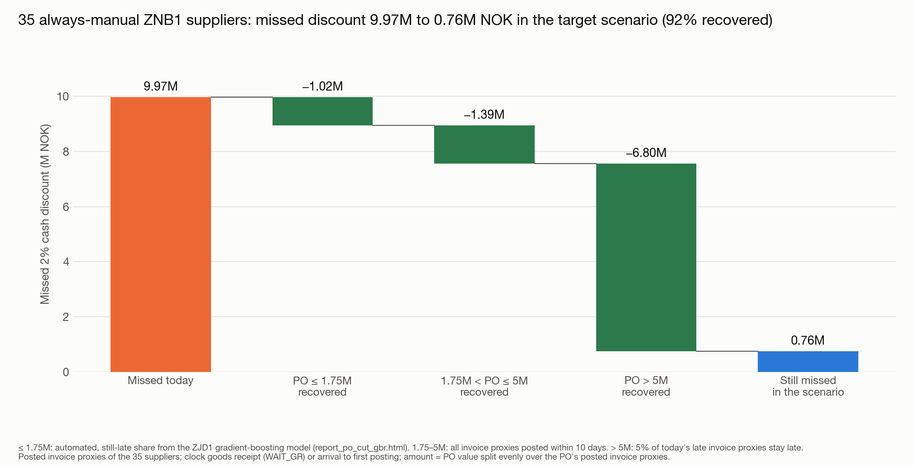

What the 35 ZNB1 suppliers whose invoice proxies always go to the manual queue would still lose in cash discount if POs up to 1.75M NOK were automated and the larger POs met posting targets.
NOK missed 2% discount, today vs. target scenario: 9.21M (92%) recovered.
of that comes from the 69 POs above 5M NOK (1,158 invoice proxies). The large POs carry most of the money, so the posting target on them matters most.
from automating the 524 POs up to 1.75M NOK: 78% of the POs, but only 13% of today's missed discount.
invoice proxies stay manual (55%). Today 72% of them are posted within 10 days, at a median of 8.0 days: the targets need a faster queue, not a new process.
The PO value decides how an invoice proxy is handled. The rules apply to all posted invoice proxies of the 35 suppliers whose invoice proxies are 100% routed to the manual queue (CTRL1) at validation, the same scope as the PO-cut report.
| PO value | Handling | Target / assumption |
|---|---|---|
| PO ≤ 1.75M NOK | Automated (handled like normal orders, ZJD1) | About 5% still posted after 10 days: the model estimate from the PO-cut report, 5.0% (90% interval 4.4%–5.4%) |
| 1.75M < PO ≤ 5M | Stays manual | a) every invoice proxy posted within 10 days, b) within 30 days |
| PO > 5M | Stays manual | c) of the 324 invoice proxies posted after 10 days today, 5% are still late (95% recovered); b) all within 30 days |
b) adds nothing today. No invoice proxy above the cut is posted after 30 days today, so the 30-day target costs nothing extra; it guards against late interest (0 NOK today above the cut). Below the cut 5 invoice proxies take longer than 30 days today (1,601 NOK interest); the model does not estimate the 30-day share after automation.
| Segment | Invoice proxies | POs | Amount (NOK) | > 10 days today | Missed today | > 10 days scenario | Missed scenario | Recovered |
|---|---|---|---|---|---|---|---|---|
| PO ≤ 1.75M | 1,468 | 524 | 200M | 444 (30%) | 1.25M | 73 (5.0%) | 0.23M 0.20M–0.25M | 1.02M |
| 1.75M < PO ≤ 5M | 669 | 79 | 251M | 188 (28%) | 1.39M | 0 (0.0%) | 0.00M | 1.39M |
| PO > 5M | 1,158 | 69 | 1,366M | 324 (28%) | 7.33M | 16 (1.4%) | 0.53M 0.08M–1.32M | 6.80M |
| Total | 3,295 | 672 | 1,818M | 956 (29%) | 9.97M | 89 (2.7%) | 0.76M 0.28M–1.57M | 9.21M |

Reading the table. Automation helps the many small POs, but the money sits in the few large ones: the 69 POs above 5M NOK hold 75% of the amount and 73% of today's missed discount. Even after the scenario they keep 70% of what is still lost (0.53M of 0.76M): only 16 invoice proxies stay late there, but each carries a large amount.
The two manual segments are posted like this today (days from clock start to first posting):
| Segment | Invoice proxies | Median days | 90% within (days) | ≤ 10 days | 10–15 days | 15–30 days | > 30 days |
|---|---|---|---|---|---|---|---|
| 1.75M < PO ≤ 5M | 669 | 7.4 | 13.3 | 72% | 27% | 1% | 0.0% |
| PO > 5M | 1,158 | 8.1 | 13.3 | 72% | 24% | 4% | 0.0% |
Most late invoice proxies miss the limit by only a few days: the queue is worked first-in-first-out at a median of about 8 days (see the FIFO report). Two levers reach the targets without automation:
Target c) is based on the invoice proxies on POs above 5M that are posted after 10 days today: 5% of them stay late. Which ones stay late matters, because the amounts differ a lot: the main result values each invoice proxy that stays late at the 75th percentile of their amounts (1.63M NOK; average 1.13M, median 0.76M), a cautious choice above the typical amount. The range takes the 5% smallest or largest. The row "other reading" shows the alternative interpretation (5% of all invoice proxies above 5M late) for comparison.
| Variant | Still missed | Recovered | Recovered share |
|---|---|---|---|
| Main: c) 5% of today's late > 5M invoice proxies stay late, at the 75th-percentile amount | 0.76M | 9.21M | 92% |
| c) same, at their average amount | 0.59M | 9.38M | 94% |
| c) same, at their median amount | 0.47M | 9.50M | 95% |
| c) the 5% are the smallest of today's late ones | 0.31M | 9.66M | 97% |
| c) the 5% are the largest of today's late ones | 1.55M | 8.42M | 84% |
| c) 10% of today's late > 5M stay late (75th-percentile amount) | 1.29M | 8.69M | 87% |
| c) 0%: all > 5M within 10 days | 0.23M | 9.74M | 98% |
| c) other reading: 5% of all > 5M invoice proxies late | 1.59M | 8.38M | 84% |
| Segment ≤ 1.75M: model 90% interval, low | 0.73M | 9.24M | 93% |
| Segment ≤ 1.75M: model 90% interval, high | 0.78M | 9.19M | 92% |
| Segment ≤ 1.75M: arrival-clock model | 1.06M | 8.92M | 89% |
| Segment ≤ 1.75M: ZJD1 WAITGR road only | 0.63M | 9.34M | 94% |
The largest uncertainty is which of today's late invoice proxies above 5M stay late: 0.08M to 1.32M for that segment. The automation model moves the total by at most 0.42M across its variants.
CTRL1 at their first Initial validation (and at least one posted straight from the queue); all their posted invoice proxies, 3,295 on 672 POs. Deleted and never-posted invoice proxies are left out.WAIT_GR) or, without one, arrival in AP, to the first posting. Missed discount = 2% of the amount of every invoice proxy posted after more than 10 days. Late interest = 12.5% p.a. from day 30, payment assumed on the posting day.Case_Invoice_Value_NOK) split evenly over the PO's posted invoice proxies; the log has no amount per invoice.po_cut_gbr_results.csv.